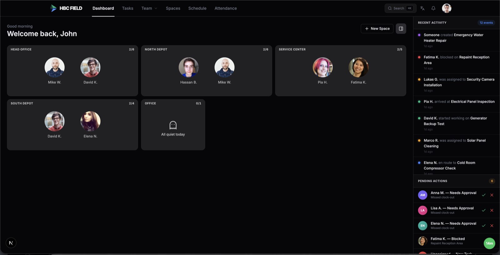
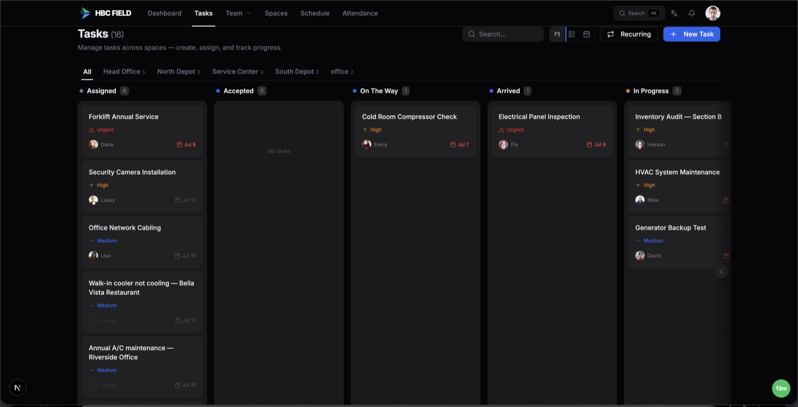
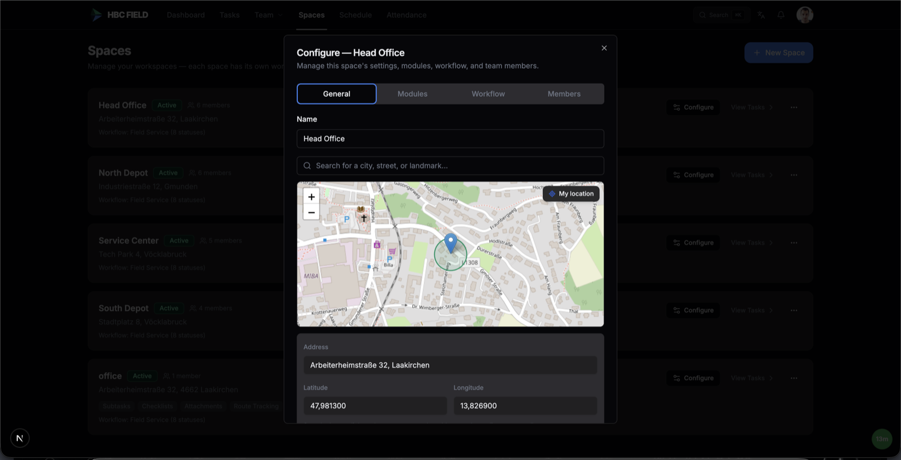
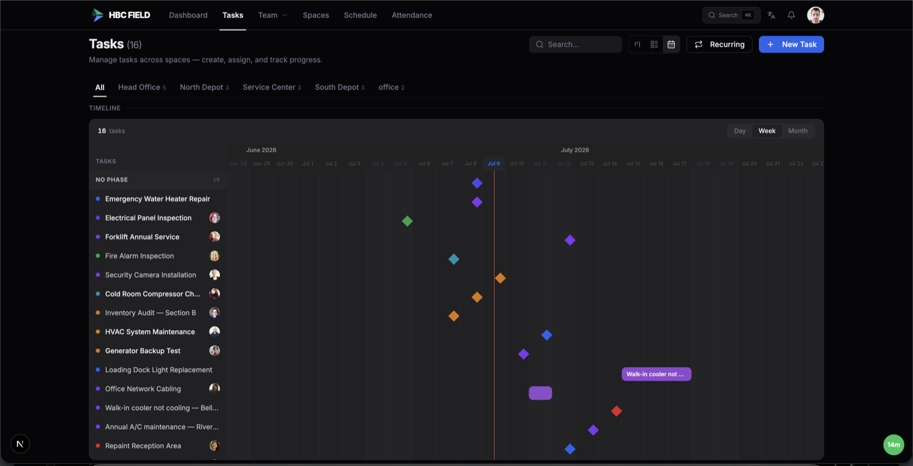
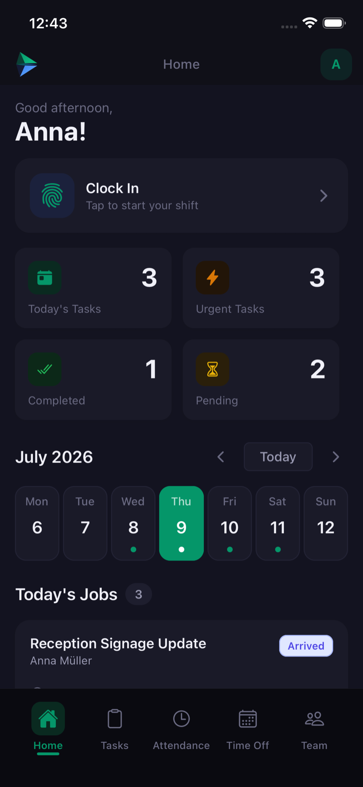
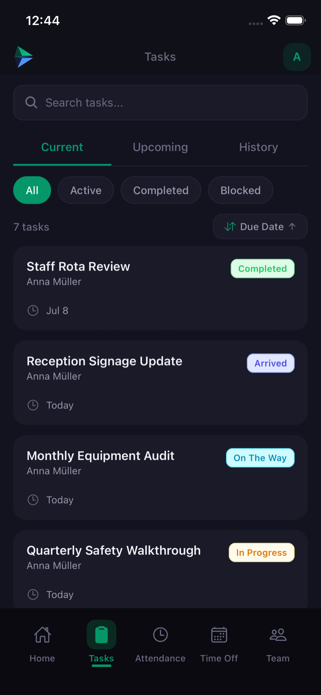
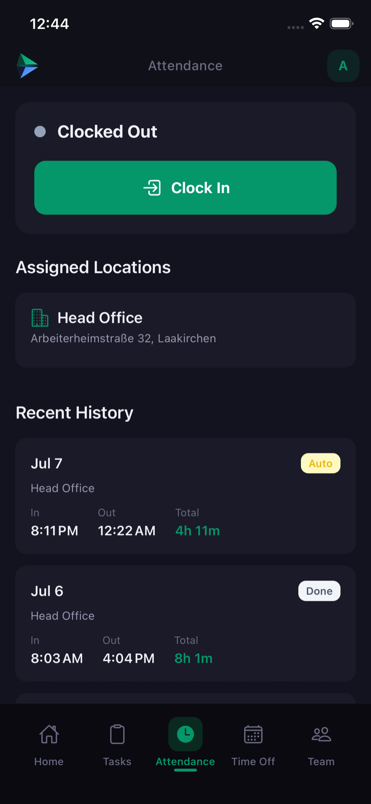
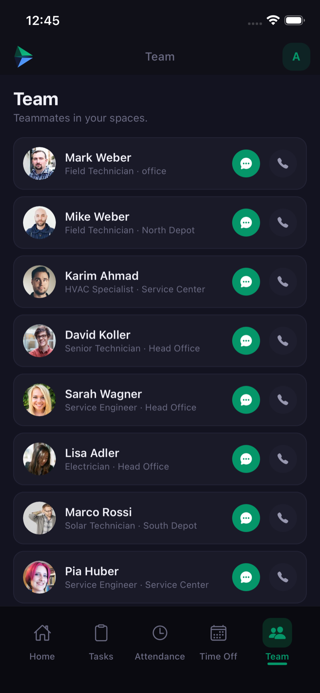

Eine Plattform, um jeden Auftrag zu disponieren, jeden Techniker in Echtzeit zu verfolgen, jede geleistete Stunde nachzuweisen und jeden Einsatz zu dokumentieren — als Ersatz für die drei separaten Tools, mit denen die meisten Außendienstbetriebe heute jonglieren.

Die Leitzentrale — Ihr gesamter Betrieb, live.
Die meisten Außendienstbetriebe disponieren im einen Tool, erfassen Zeiten im nächsten und GPS im dritten — und gleichen dann alles von Hand ab. HBCField ist ein System, das alle drei vereint, sauber aufgeteilt in ein Web-Portal fürs Büro und eine mobile App fürs Feld.
Admins und Disponenten erstellen Aufträge, weisen den passenden Techniker zu, verfolgen die Live-Karte, genehmigen Stunden und Berichte und planen über alle Standorte hinweg — alles in Echtzeit.
Techniker sehen ihren Tag, sobald sie die App öffnen: Aufträge annehmen und abschließen, vor Ort einstempeln, Fotos und Unterschriften erfassen und der Route folgen — online oder unterwegs.
Admin legt einen Auftrag mit Standort, Termin & Fotos an.
Disponent prüft Verfügbarkeit & weist zu — sofortige Push-Nachricht.
Techniker führt den Auftrag aus; GPS zeichnet die genaue Route auf.
Unterschriebener Servicebericht, Stunden & Verlauf — automatisch.

Von der Disposition bis zur Erledigung, auf einem Board — jeder Auftrag, live.
Keine Status-Anrufe und Tabellen mehr. Alles, was das Büro für den Tagesbetrieb braucht, lebt in einem einzigen Live-Arbeitsbereich im Web.

Geozäune an Standorten und Live-GPS bedeuten: Die Disposition weiß immer, wo jeder Techniker ist — und die exakte gefahrene Strecke, nicht nur eine Luftlinie.

Eine Zeitleiste über alle Standorte, wiederkehrende Aufträge und Techniker-Verfügbarkeit — die Kapazität Ihres gesamten Betriebs auf einen Blick.
Boards, Karten und Aktivitäts-Feeds aktualisieren sich in dem Moment, in dem sich im Feld etwas ändert — kein Neuladen, kein Abfragen.
Offene Stunden, Urlaubsanträge und Berichte erscheinen als Aufgaben — genehmigen oder ablehnen ohne Suchen.
Führen Sie mehrere Standorte, Teams oder Kundenorganisationen über ein einziges Dashboard.
Die mobile App bringt die ganze Schicht in eine Hand — und synchronisiert sie in Echtzeit zurück ins Büro.

Ihr Tag auf einen Blick

Jeder Auftrag, annehmen → erledigt

Vor Ort einstempeln — verifiziert

Das ganze Team, ein Tipp
Das Einstempeln wird gegen den zugewiesenen Standort verifiziert, mit vollständigem Verlauf — Stunden sind belegbar, nicht geschätzt.
Die App zeichnet den tatsächlichen Weg auf, selbst im Hintergrund — akkuschonend und straßengenau.
Fotos, verwendete Teile und ein unterschriebener Servicebericht, direkt am Auftrag erfasst — jedes Mal ein vollständiger Nachweis.
Ein Login für das ganze Unternehmen. Der Zugriff passt sich jeder Person an — Inhaber sehen alles, Disponenten steuern das Board, Außendienstmitarbeiter sehen nur ihre Aufträge. Rolle und Berechtigung werden pro Nutzer festgelegt, sodass ein Produkt zu sehr unterschiedlichen Teamstrukturen passt.
Die meisten Außendienstbetriebe zahlen separat für ein Außendienst-Tool, eine Stempeluhr und einen GPS-Tracker — drei Rechnungen, drei Logins und Stunden fürs Abgleichen. HBCField ist alle drei in einem System.
| Was Sie sonst kaufen würden | Typische Kosten | HBCField |
|---|---|---|
| Außendienstverwaltung (Jobber, Housecall Pro) | 45–65 € / Nutzer | ✓ enthalten |
| Zeit & Anwesenheit (Deputy, When I Work) | 5–8 € / Nutzer | ✓ enthalten |
| GPS / Routenverfolgung (Hubstaff) | 8 € / Nutzer | ✓ enthalten |
| Drei separate Abonnements | 60–90 € / Nutzer | eine Plattform · ab 29 € / Nutzer |
Die tatsächlich gefahrene Strecke eines Technikers, erfasst selbst bei gesperrtem Handy. Premium selbst in der FSM-Welt — die meisten verstecken es hinter ihrem Top-Tarif.
Regelbasierte Überstunden-Erkennung, geozaunbasiertes Auto-Ausstempeln und ein Genehmigungsablauf — weit mehr als eine aufgesetzte Stempeluhr.
Franchises, Subunternehmer und Agenturen können viele Kundenorganisationen über ein Konto verwalten — Enterprise-Niveau, selten in KMU-Tools.
Benutzerdefinierte Felder, Auftragstypen, wiederkehrende Aufträge und Workflows sorgen dafür, dass sich das System an Ihre Arbeitsweise anpasst — eine Plattform, keine starre App.
Der Satz, der überzeugt: „Ersetzt Jobber + Deputy + Hubstaff — für weniger als eines davon, mit einem einzigen Login.“
Wo immer vor Ort gearbeitet wird, koordiniert HBCField den Einsatz — und zeigt genau, wem es hilft, wie und was Sie sparen.
Wer — Vermieter und Facility-Manager mit vielen Gebäuden und Einheiten.
Wie — Mieteranfragen werden zu disponierten Aufgaben, Geozaun-Einstempeln je Gebäude, Foto- + unterschriebene Serviceberichte, wiederkehrende Sicherheitsprüfungen, Live-Karte und Prüfprotokoll.
Nutzen — Mehr Einheiten pro Kraft, nachweisbare Stunden, dokumentierte Compliance, schnellere Reaktion.
Wer — Installations- und Reparaturbetriebe mit mobilen Technikern.
Wie — Aufträge nach Standort und Priorität, Statusfluss von unterwegs über angekommen bis abgeschlossen, Serviceberichte mit Teilen und Kundenunterschrift, dann Rechnung.
Nutzen — Schnellere Abwicklung, nachweisbare Arbeit und Teile, schnellere Abrechnung.
Wer — Gebäudereiniger mit wiederkehrenden Runden über mehrere Standorte.
Wie — Wiederkehrende Aufgaben je Standort, Geozaun-Einstempeln als Anwesenheitsnachweis und Checklisten über benutzerdefinierte Felder.
Nutzen — Keine verpassten Runden, verifizierte Anwesenheit, weniger Aufsicht.
Wer — Sicherheitsdienste mit Streifen und Kontrollen.
Wie — Geplante wiederkehrende Streifenaufgaben, zeitgestempelte Geozaun-Check-ins, GPS-Routennachweis und Foto-Vorfallberichte.
Nutzen — Nachweisbare Abdeckung für Kunden und deutlich weniger Streitfälle.
Wer — Außenteams, die viele Standorte betreuen.
Wie — GPS-routenverfolgte Besuche, wiederkehrende saisonale Pläne und Vorher-/Nachher-Fotos.
Nutzen — Effiziente Routen, dokumentierte Arbeit, klarer Nachweis für Kunden.
Wer — Serviceteams, die Maschinen und Anlagen beim Kunden warten.
Wie — Anlagenbezogene Aufgaben mit vollständiger Wartungshistorie, Serviceberichte mit Teilen, wiederkehrende Wartung und Unterschriften.
Nutzen — Vollständige Historie je Anlage, schnellere Folgebesuche, nachweisbare Garantiearbeiten.
Ein Live-Board und eine Karte ersetzen die „Wo bist du?“-Anrufe und die Tabelle am Feierabend.
Geozaunbasiertes Einstempeln und ein Prüfprotokoll machen Lohn-Streitigkeiten überflüssig.
Fotos, Teile und unterschriebene Berichte bedeuten: Sie können immer genau zeigen, was getan wurde.
Aufgaben, Anwesenheit, GPS, Dienstpläne & Mobil.
Alles aus Starter, plus das komplette Feld-Toolkit.
Für Franchises, Agenturen & Multi-Standort-Betriebe.
Preise je Büro-Platz · Feld-/Techniker-Plätze je 19 € · Enterprise ab 199 €/Mon. oder individuelles Angebot · Jahresabrechnung = 2 Monate gratis · 14 Tage testen, keine Karte.
In Minuten kostenlos starten — keine Kreditkarte. Holen Sie Ihr Team Trupp für Trupp an Bord.
Demo anfragen · office@hbcfield.com